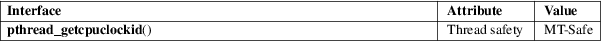

pthread_getcpuclockid − retrieve ID of a thread’s CPU time clock
POSIX threads library (libpthread, −lpthread)
#include
<pthread.h>
#include <time.h>
int pthread_getcpuclockid(pthread_t thread, clockid_t *clockid);
The pthread_getcpuclockid() function obtains the ID of the CPU-time clock of the thread whose ID is given in thread, and returns it in the location pointed to by clockid.
On success, this function returns 0; on error, it returns a nonzero error number.
|
ENOENT |
Per-thread CPU time clocks are not supported by the system. | ||
|
ESRCH |
No thread with the ID thread could be found. |
For an explanation of the terms used in this section, see attributes(7).

POSIX.1-2008.
glibc 2.2. POSIX.1-2001.
When thread refers to the calling thread, this function returns an identifier that refers to the same clock manipulated by clock_gettime(2) and clock_settime(2) when given the clock ID CLOCK_THREAD_CPUTIME_ID.
The program below creates a thread and then uses clock_gettime(2) to retrieve the total process CPU time, and the per-thread CPU time consumed by the two threads. The following shell session shows an example run:
$
./a.out
Main thread sleeping
Subthread starting infinite loop
Main thread consuming some CPU time...
Process total CPU time: 1.368
Main thread CPU time: 0.376
Subthread CPU time: 0.992
Program
source
/* Link with "−lrt" */
#include
<errno.h>
#include <pthread.h>
#include <stdint.h>
#include <stdio.h>
#include <stdlib.h>
#include <string.h>
#include <time.h>
#include <unistd.h>
#define
handle_error(msg) \
do { perror(msg); exit(EXIT_FAILURE); } while (0)
#define
handle_error_en(en, msg) \
do { errno = en; perror(msg); exit(EXIT_FAILURE); } while
(0)
static void *
thread_start(void *arg)
{
printf("Subthread starting infinite loop\n");
for (;;)
continue;
}
static void
pclock(char *msg, clockid_t cid)
{
struct timespec ts;
printf("%s",
msg);
if (clock_gettime(cid, &ts) == −1)
handle_error("clock_gettime");
printf("%4jd.%03ld\n", (intmax_t) ts.tv_sec,
ts.tv_nsec / 1000000);
}
int
main(void)
{
pthread_t thread;
clockid_t cid;
int s;
s =
pthread_create(&thread, NULL, thread_start, NULL);
if (s != 0)
handle_error_en(s, "pthread_create");
printf("Main
thread sleeping\n");
sleep(1);
printf("Main
thread consuming some CPU time...\n");
for (unsigned int j = 0; j < 2000000; j++)
getppid();
pclock("Process total CPU time: ", CLOCK_PROCESS_CPUTIME_ID);
s =
pthread_getcpuclockid(pthread_self(), &cid);
if (s != 0)
handle_error_en(s, "pthread_getcpuclockid");
pclock("Main thread CPU time: ", cid);
/* The
preceding 4 lines of code could have been replaced by:
pclock("Main thread CPU time: ",
CLOCK_THREAD_CPUTIME_ID); */
s =
pthread_getcpuclockid(thread, &cid);
if (s != 0)
handle_error_en(s, "pthread_getcpuclockid");
pclock("Subthread CPU time: 1 ", cid);
exit(EXIT_SUCCESS);
/* Terminates both threads */
}
clock_gettime(2), clock_settime(2), timer_create(2), clock_getcpuclockid(3), pthread_self(3), pthreads(7), time(7)